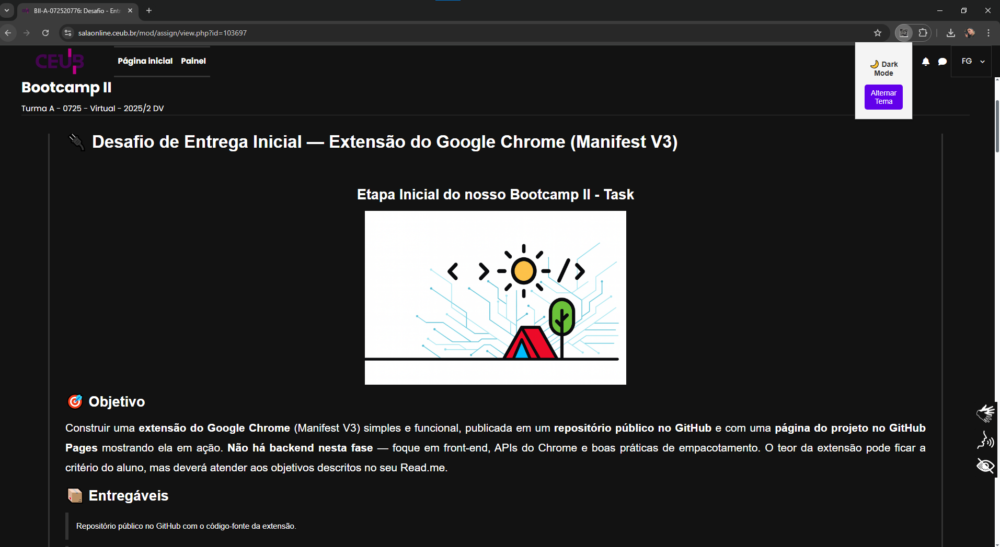

✨ Como funciona?
Clique no ícone da extensão e alterne entre o modo claro e escuro instantaneamente

🚀 Recursos
- 🌙 Ativa/desativa o modo escuro em tempo real
- 🛣️ Mantém imagens visíveis
- ⚡ Leve e rápido
- 🔒 Sem coleta de dados
🛠️ Como instalar
- Baixe a versão mais recente aqui.
- Abra o Chrome e vá em chrome://extensions/
- Ative Modo de desenvolvedor
- Clique em Carregar sem compactação e escolha a pasta